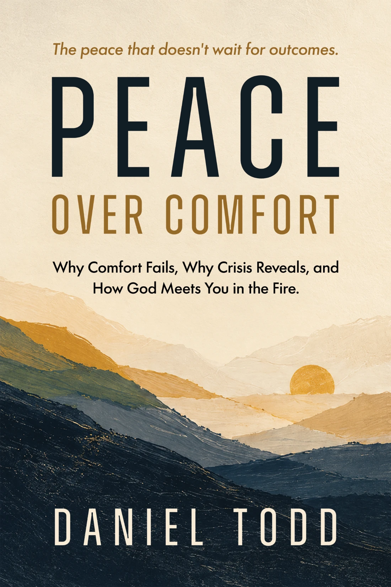

A new book by Daniel Todd
PeaceOver Comfort
Why Comfort Fails, Why Crisis Reveals, and How God Meets You in the Fire.
Most of us believe peace comes after the problem is solved. This book is about the peace you can have while you are still standing in the fire—because Jesus is standing in it with you.

01
The central idea
Peace is not the absence of fire.
We spend much of our lives asking God to change our circumstances. To open the door. Reverse the diagnosis. Restore the security. Remove the uncertainty.
But what if peace is available before the outcome? Not through denial. Not through easy answers. Through the presence of Christ in the place you most want to escape.
“Don’t ask God to get you out of the fire.
Ask Him to meet you there.”
— Daniel Todd